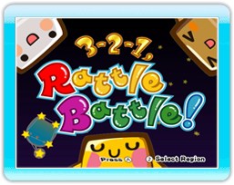
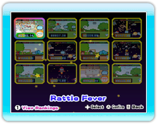
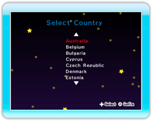

9 |
Getting Started |
 |
On the Title Screen, press to go to the Mini-Game Selection Screen or press to go to the Region Selection Screen.
On this screen, you can select any of the action-packed mini-games. Use
On this screen, you can select the region where you are currently located.
Note: When starting the game for the first time, please select your region before going to the Title Screen. |
 |
 |
 |